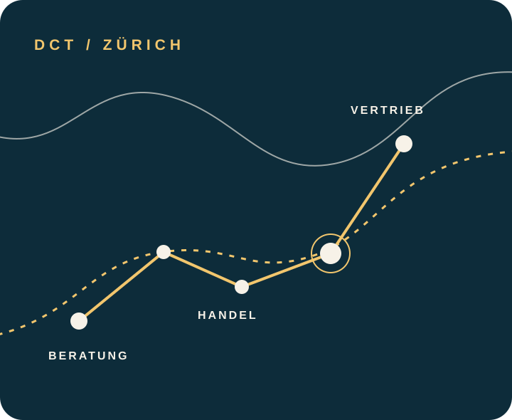

Business development & advisory
Advisory services in the areas of business development, trade, sales and marketing.
Zurich · Advisory & trade
Deniz Çelik Consulting & Trading brings together advisory in business development, trade, sales and marketing with brokerage and trading activities.

Business development · Trade · Sales & marketing
Areas of activity
The business is active in advisory, trade and brokerage. These areas come together where development, goods flows and market work meet.
Advisory services in the areas of business development, trade, sales and marketing.
Trading in goods of all kinds as well as import and export, particularly of consumer goods, textiles and packaging.
Carrying out brokerage and sales activities as part of the registered business purpose.
Profile
A Zurich business at the intersection of advisory and trade.
Deniz Çelik Consulting & Trading is focused on connecting business advisory with trade, sales and brokerage activities. Its registered business purpose centres on business development, trade, sales and marketing.
Contact
For written contact and the business details, the registered business address is available in the legal notice.
The legally relevant company details and postal address are set out clearly on the separate information page.
Legal notice